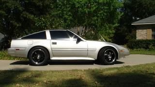

-
shit bro, sorry to hear that …but I'm sure we can accomadate your special needs :gni I kid I kid
Kira-1988 N/A T-Top- Turbo soon
…but I'm sure we can accomadate your special needs :gni I kid I kid
Kira-1988 N/A T-Top- Turbo soon
Naomi-1984 N/A Slicktop R.I.P.-stolen
1976 Chevy Camaro R.I.P.- Custom candycane rods -
How are you getting all excited over like a 5 man meeting? Lol you must be new here. I used to get excited for EVERYTHING, but then after a while it gets kinda old, especially when you blow your motor up and can't drive the damn thing for like 7 months.
Ask me how I know. :down
2001 Mazda Miata LS
also a 1989 Nissan 240SX
50th AE Build Thread SOLD 2015 -
Drove the Z yesterday. She seemed to shift fine in drive, reverse is still out though. I might limp it to Birmingham. I don't know though. Previously, it wasn't shifting into third gear either. Maybe I can catch a ride with some friends that were going to attend the meet.
1985 300ZX Turbo GLL ^Click for log^
Originally posted by nater86zx -
I know it's only a 5 person thing lol, but it is my first one and a guy on here said he was gonna mention it to some Z's from georgia so idk, it's not till June so we got time to grow and I'm still hopefull lol. Mine has a blown head gasket right now so I know how you feel about the not driving it. I would like to have a bigger turn out though and I know that if the word gets out there will be plenty of people coming because you don't see alot (if any Z meets towards this area of the U.S.)
I hope you can come man, It'd be good to meet ya and have a bunch of Z guys there. However if it's only gonna be like 4-5 guys then idk if it's gonna happen cause the bad would outweigh the good. I mean I've gotta drive 3 1/2 hours just to get there…I dunno. god knows I want to though :-?Kira-1988 N/A T-Top- Turbo soon
Naomi-1984 N/A Slicktop R.I.P.-stolen
1976 Chevy Camaro R.I.P.- Custom candycane rods -
You just missed ZATTACK 2K12 last weekend up in Nashville. ZCON always tends to make it's way to either Nashville or Atlanta every couple years or so as well. Z Nationals is usually in Atlanta every year, and then there's always Import Alliance/Import Face-Off in Atlanta/Birmingham respectively. ZDAYZ is always held at Deals Gap in North Carolina. Although there's never any Z31-SPECIFIC events that really go on, there's no shortage of generic Z gatherings that are usually happening. Locally there's a North Alabama Nissan group that meets monthly, and there's a few Z31s in the group with myself.NizmoZ31 wrote: I would like to have a bigger turn out though and I know that if the word gets out there will be plenty of people coming because you don't see alot (if any Z meets towards this area of the U.S.)
If you REALLY want to open it up, make it for any type of "zetto" or just open it up to anyone with anything. There's just not enough active enthusiasts here on Z31P in the south east to get a real solid turnout. Just my $.02 though.
2001 Mazda Miata LS
also a 1989 Nissan 240SX
50th AE Build Thread SOLD 2015 -
Nizmo, if nothing else I'll be riding with my friends. In fact, you can stop by in Montgomery, and we can all ride up together. I'm right off the interstate so we can grab a bite, fuel up, whatever. :-)
1985 300ZX Turbo GLL ^Click for log^
Originally posted by nater86zx -
[quote]Kimbro Slice wrote:Is that Erv guy that's part of ARS still running the "cruise" at Little River Canyon near Fort Payne? I went with the Huntsville and B'ham group in 2010 to LRC and had a blast. Alabama's smaller version of the Tail of the Dragon.Originally posted by NizmoZ31
1986 300ZX Turbo…sold
1990 Skyline GT-R…new money pit
2014 Juke Nismo RS 6-speed…daily -
I believe so, they try and do them every month or two I'm pretty sure. Last one I saw any word of though was probably back in November or so. I would poke around on FB, I do remember them making events for them on there.NissanEgg wrote:
Is that Erv guy that's part of ARS still running the "cruise" at Little River Canyon near Fort Payne? I went with the Huntsville and B'ham group in 2010 to LRC and had a blast. Alabama's smaller version of the Tail of the Dragon.
2001 Mazda Miata LS
also a 1989 Nissan 240SX
50th AE Build Thread SOLD 2015 -
[quote]Kimbro Slice wrote:It is open to anyone.Originally posted by NizmoZ31 Look at the other posts, someone is coming with an RX7 and my friends are coming with a Subaru Legacy and a Mustang.
Look at the other posts, someone is coming with an RX7 and my friends are coming with a Subaru Legacy and a Mustang.
1985 300ZX Turbo GLL ^Click for log^
Originally posted by nater86zx -
If it wasn't to terribly obvious I'm really new here, but I'll keep an eye out the meet I'm trying to put together is for anyone that loves things that go fast lol, anyone is welcome really 8)
Kira-1988 N/A T-Top- Turbo soon
Naomi-1984 N/A Slicktop R.I.P.-stolen
1976 Chevy Camaro R.I.P.- Custom candycane rods -
Add me to the list. Just not sure which car we are bringing… the 86 or the wifes new Camaro RS.
Silver 86T 3" turbo back Cm exhaust ST Springs / Tokiko Blues
87-89 turbo front hubs z32 brakes in front Z32 Master Cylinder
Autometer boost gauge a-pillar pod, autometer oil temp and pressure.
5zigen FN01R-C FRONT 17x8.5 245/45 REAR 17x10 285/40 rubber Kumho ECSTA ASX
Turbo XS BC, EGRblocked off, 5% limo tint -
Awesome! See you there in something cool *cough* hopefully the Z *cough*  Kira-1988 N/A T-Top- Turbo soon
Kira-1988 N/A T-Top- Turbo soon
Naomi-1984 N/A Slicktop R.I.P.-stolen
1976 Chevy Camaro R.I.P.- Custom candycane rods -
Nizmo, you just want to add a list of people attending to the OP?
1985 300ZX Turbo GLL ^Click for log^
Originally posted by nater86zx -
No the 87T is still in the restore process. If we bring a Z it will be the 86T and most likely will trailer it…
Silver 86T 3" turbo back Cm exhaust ST Springs / Tokiko Blues
87-89 turbo front hubs z32 brakes in front Z32 Master Cylinder
Autometer boost gauge a-pillar pod, autometer oil temp and pressure.
5zigen FN01R-C FRONT 17x8.5 245/45 REAR 17x10 285/40 rubber Kumho ECSTA ASX
Turbo XS BC, EGRblocked off, 5% limo tint -
I will admit it, I just skimmed this real fast while at work. Do you have a meet point and aprox time?"zetto sun-ichi" group"

Copyright © 2006–. All rights reserved. Privacy Policy